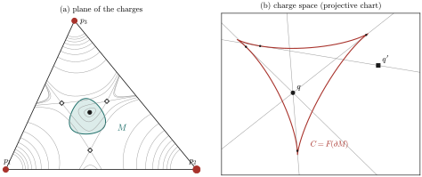
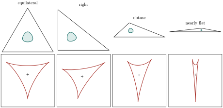

Three positive point charges have at most four equilibria
A computer-assisted proof of Maxwell’s bound for three charges
Claudio Mattioni
github.com/ing-mattioni
30 October 2026, revised 31 October 2026 · preprint
Abstract
Maxwell conjectured in 1873 that the electrostatic field of $n$ point charges in $\R^3$ has at most $(n-1)^2$ isolated equilibrium points. The conjecture is now known to fail for $n=5$. For three positive charges the best bound in the literature is $6$, obtained in 2026 by Gabrielov, Novikov, Novikov and Shapiro, who improved the earlier bound $12$ of Gabrielov, Novikov and Shapiro. We prove that three positive Coulomb charges in $\R^3$ have at most four equilibria, which is Maxwell’s bound for $n=3$ and is sharp.
When the charges are not collinear, all equilibria lie in the open triangle they span, and none is a maximum of the potential restricted to the plane. When they are nondegenerate, each is a local minimum or a saddle, and there are $2+2m$ of them, where $m$ is the number of minima. Using Lami’s theorem, we write the charges that make a given point critical in closed form. A nondegenerate minimum must lie in the region $M=\{|\sum_i\lambda_i u_i^2|\lt \tfrac13\}$, where $\lambda_i$ are its barycentric coordinates and $u_i$ the unit vectors from the charges (as complex numbers). The number of minima equals the winding number around $q$ of a caustic curve $C$ in the space of charge ratios. A Sturm-type lemma for plane fronts with three ordinary cusps, no inflections and total tangent turning $\pi$ shows that this winding number is at most one in absolute value.
The hypotheses of the lemma reduce to four strict inequalities between explicit functions of four variables on a compact domain, plus one two-dimensional check for a single triangle. We verify them by branch and bound with outward-rounded interval arithmetic that does not rely on the platform’s mathematical library. About $10^7$ boxes were processed and none was left unresolved, in each of two different initial subdivisions. The computer-assisted part has not yet been independently checked; the accompanying source is provided for scrutiny.
Status. This is a preprint and has not been peer reviewed. Sections 2–5 are mathematical arguments meant to be checked by hand. Theorem is established by the computations of Section , whose correctness rests on the implementation described there. See Section for what an independent check should cover, and the AI-assistance statement at the end.
Introduction
In his Treatise on Electricity and Magnetism, Maxwell argued that the field of $n$ point charges has at most $(n-1)^2$ points of equilibrium, provided they are isolated. His heuristic counted the intersections of the two curves on which two components of the field vanish. The statement became known as Maxwell’s conjecture. It turned out to be remarkably hard even for $n=3$.
Gabrielov, Novikov and Shapiro brought the problem to modern attention. Using the theory of fewnomials , they proved general finiteness bounds. For three positive charges they showed that there are at most $12$ nondegenerate equilibria. Zolotov obtained further upper bounds via the Thom–Milnor theorem. Tsai proved the bound $4$ for three charges of equal magnitude, by a computer-assisted symbolic computation. Edelsbrunner, Fillmore and Oliveira disproved a related conjecture of that compares equilibria with Voronoi cells. In July 2026 two preprints appeared. Arathoon, Ball and Kvalheim exhibited five charges whose field has at least $24 \gt 16=(5-1)^2$ nondegenerate equilibria, so Maxwell’s conjecture is false in general. Gabrielov, Novikov, Novikov and Shapiro lowered the three-charge bound from $12$ to $6$. The question whether three positive charges can have $6$ equilibria was therefore open.
We answer it for the Coulomb potential. The contribution is the geometric reduction for arbitrary positive charge ratios and the verified inequalities on the full shape domain. The support-function and Sturm-comparison tools belong to existing hedgehog theory, discussed in Section . Independently, Enciso and Peralta-Salas proved finiteness for any number of charges of one sign; that result does not give the sharp three-charge bound used here.
Let $q_1,q_2,q_3\gt 0$ be charges at three distinct points $p_1,p_2,p_3\in\R^3$, and let $V(y)=\sum_{i}q_i|y-p_i|^{-1}$. Then the electrostatic field $E=-\nabla V$ vanishes at no more than four points. More precisely:
If the $p_i$ are collinear, $E$ has exactly two zeros.
Otherwise every zero of $E$ lies in the open triangle $\Delta^\circ$ spanned by the charges. There is a closed curve $C=C(p_1,p_2,p_3)$ in the open simplex of normalized charge vectors such that, for $q\notin C$, the number of zeros is $2$ or $4$, according to whether $q$ lies outside or inside $C$. Both cases occur for every triangle.
The proof is computer-assisted: it uses the interval-arithmetic verification of Theorem .
Since four equilibria occur (for instance for equal charges at the vertices of an equilateral triangle, a case already discussed by Maxwell), the bound is sharp. In the language of , Theorem closes the gap between $6$ and Maxwell’s $(3-1)^2=4$ for positive Coulomb charges. In contrast with , whose methods treat Riesz potentials of general exponent, we prove it only for the Coulomb exponent; see Section for evidence about other exponents and about charges of mixed signs.
Strategy
The argument has a geometric part (Sections –) and a computational part (Sections –).
Reduction. For noncollinear sites and nondegenerate parameters, all equilibria lie in the open triangle $\Delta^\circ$. There they are critical points of the planar potential, never maxima, and their number is $2+2m$, where $m$ is the number of local minima. So it suffices to show $m\le 1$.
Inverse problem. By Lami’s theorem, a point $x\in\Delta^\circ$ is critical exactly for the charges $q\propto F(x)=(\lambda_i r_i^{3})_i$. Here $\lambda_i$ are the barycentric coordinates of $x$ and $r_i=|x-p_i|$. The point is a nondegenerate minimum if and only if $|Z(x)|\lt\frac13$, where $Z=\sum_i\lambda_iu_i^2$ in complex notation. This defines a purely geometric minimum region $M\subset\Delta^\circ$.
Caustic. The map $F$ is the Gauss map of a surface, and $M$ is its elliptic part. Hence the number of minima for the charges $q$ equals $|\wind(C,q)|$, where $C=F(\partial M)$ is a caustic in the projective plane of charge ratios.
A Sturm-type lemma. A plane front with no inflections, total tangent turning $\pi$ and exactly three ordinary cusps is a simple closed curve. Through every point pass at most three of its tangent lines, and its winding numbers lie in $\{0,\pm1\}$ (Theorem ).
Verification. The hypotheses of the lemma follow from four strict inequalities (J), (I), (T), (W) on a compact domain of four variables, plus a check on one triangle. The four inequalities are written in a local chart in which every quantity has a closed form (Section ), and they are verified by interval arithmetic (Section ).
On the computer-assisted part
The four inequalities involve rational functions of $\sin$ and $\cos$ of the angles of the configuration and of its barycentric coordinates. Every term has an explicit formula, derived in Section . We verify them on a compact four-dimensional domain using IEEE double precision. Every operation is rounded outward, and $\sin,\cos$ are enclosed by Taylor polynomials with explicit remainders, so no assumption is made on the accuracy of the platform’s mathematical library. Enclosures are sharpened by mean-value forms computed with interval automatic differentiation. Two runs from different initial subdivisions each processed about $10^7$ boxes and left none unresolved, in about eight minutes using 16 worker processes. The code is available . Proofs that combine analysis with a rigorous computation over a compact parameter domain have a long history (see e.g. ); for interval methods see .

Figure 1. (a) Three charges (red, sized by magnitude) with $q$ chosen inside the caustic. The equipotential lines are shown in grey. The minimum region $M=\{|Z|\lt\frac13\}$ is shaded, and it contains the unique local minimum ($\bullet$). There are three saddles ($\diamond$), for four equilibria in total. (b) The caustic $C=F(\partial M)$ in a projective chart of charge space, a curvilinear triangle with three cusps. Exactly three tangent lines of $C$ pass through the point $q$ inside it, and one through the point $q'$ outside. By Lemma these counts give winding numbers $1$ and $0$, i.e. one minimum (four equilibria) for $q$ and none (two equilibria) for $q'$.
Reduction to minima in the plane
Throughout, $s\gt 0$ is a Riesz exponent and $V(y)=\sum_i q_i|y-p_i|^{-s}$. The Coulomb case is $s=1$, which corresponds to $s=2\alpha$ in the notation of . Nothing in Sections – depends on the value of $s$. Indices are taken modulo $3$.
Let the charges be non-collinear, let $\Pi$ be their plane, and let $\Delta\subset\Pi$ be the closed triangle with vertices $p_1,p_2,p_3$. We identify $\Pi$ with $\C$ and write, for $x\in\Pi$,
so that $\sum_i\lambda_i=1$ and $\sum_i\lambda_i(x-p_i)=0$. We denote by $\theta_i\in(0,\pi)$ the angle at $x$ subtended by the side $p_{i+1}p_{i+2}$, and by $\sigma_i=\sin\theta_i$; for $x\in\Delta^\circ$, $\theta_1+\theta_2+\theta_3=2\pi$. For complex numbers $a,b$ we write $a\cdot b=\Re(a\bar b)$ for the Euclidean inner product.
Let $q_1,q_2,q_3$ be nonzero, of arbitrary signs. In (a) and (b), assume that the sites $p_i$ are non-collinear.
Every equilibrium lies in $\Pi$.
If all $q_i\gt 0$, every equilibrium lies in $\Delta^\circ$.
If all $q_i\gt 0$ and the $p_i$ are collinear, there are exactly two equilibria.
Proof. (a) We have $\nabla V(y)=-s\sum_i w_i(y-p_i)$ with $w_i=q_i|y-p_i|^{-s-2}\ne 0$. Write $y=x+z\nu$, with $x\in\Pi$ and $\nu$ a unit normal to $\Pi$. If $\nabla V(y)=0$ and $z\neq0$, the normal component gives $\sum_iw_i=0$, and then the tangential component gives $\sum_iw_ip_i=0$. Since the $p_i$ are affinely independent, $w=0$, a contradiction.
(b) If $x\in\Pi\setminus\Delta$, there is a unit vector $e$ with $e\cdot(x-p_i)\gt 0$ for all $i$. Then $e\cdot\nabla V(x)=-s\sum_iw_i\,e\cdot(x-p_i)\lt 0$. If $x$ lies in the relative interior of the side $p_{i+1}p_{i+2}$, take $e$ normal to that side, pointing away from $p_i$; then $e\cdot(x-p_{i\pm1})=0$, $e\cdot(x-p_i)\gt 0$, and the same conclusion holds.
(c) Off the line $L$ of the charges, the component of $\nabla V$ orthogonal to $L$ is a negative multiple of the offset from $L$, so it does not vanish. By rotational symmetry about $L$, a point of $L$ is an equilibrium if and only if it is a critical point of $V|_L$. On $L$, as in (b), such points lie strictly between consecutive charges. On each of the two open segments, $V|_L$ is a sum of strictly convex functions and tends to $+\infty$ at both ends, so it has exactly one critical point. ∎
From now on, the charges are positive and non-collinear, and we study the critical points of the restriction $V_q:=V|_\Pi$ in $\Delta^\circ$. The following parametrization is the classical statics of three concurrent forces.
Let $x\in\Delta^\circ$ and $q\in\R^3_{\gt 0}$. Then $x$ is a critical point of $V_q$ if and only if $q$ is a positive multiple of
Moreover $\lambda_ir_i=c\,\sigma_i$ with $c=r_1r_2r_3/(2|\Delta|)$, so $F(x)\propto(\sigma_ir_i^{s+1})_i$.
Proof. We have $\nabla V_q=-s\sum_iw_i(x-p_i)$ with $w_i=q_ir_i^{-s-2}$. The weights $w\in\R^3_{\gt0}$ with $\sum_iw_i(x-p_i)=0$ are exactly the positive multiples of $\lambda(x)$. For the second statement, note that $\lambda_i=\operatorname{area}(x,p_{i+1},p_{i+2})/|\Delta|=\tfrac12r_{i+1}r_{i+2}\sigma_i/|\Delta|$. ∎
If $Z=|Z|e^{i\omega}$, the eigenvector of the smaller eigenvalue is $k=ie^{i\omega/2}$. Consequently, with $\kappa:=s/(s+2)$ ($\kappa=\frac13$ for Coulomb), the critical point is a nondegenerate local minimum if $|Z(x)|\lt\kappa$, a nondegenerate saddle if $|Z(x)|\gt\kappa$, and degenerate if $|Z(x)|=\kappa$. In the degenerate case, $\ker\Hess V_q(x)=\R k$ and the other eigenvalue is positive. It is never a local maximum.
Proof. $\nabla^2 r_i^{-s}=-s\,r_i^{-s-2}\big(I-(s+2)u_iu_i^{\mathsf T}\big)$, and $q_ir_i^{-s-2}=W\lambda_i$ by Lemma . Writing $u=e^{i\psi}$, we have $uu^{\mathsf T}=\frac12I+\frac12R(2\psi)$ with $R(\phi)=\left(\begin{smallmatrix}\cos\phi&\sin\phi\\ \sin\phi&-\cos\phi\end{smallmatrix}\right)$. Summing with weights $\lambda_i$ gives $T=\frac12I+\frac12|Z|R(\omega)$. The eigenvalues of $\Hess V_q/(sW)$ are therefore $\frac{s+2}2(1\pm|Z|)-1$. The larger one is always positive, and the smaller one is positive, zero or negative according as $|Z|\lt$, $=$ or $\gt\kappa$. ∎
We call $M:=\{x\in\Delta^\circ:|Z(x)|\lt\kappa\}$ the minimum region. It depends only on the triangle, and by the two lemmas above,
$$\begin{gathered}\#\{\text{nondegenerate local minima of }V_q\}=\#\big(\hat F^{-1}(\hat q)\cap M\big),\\ \hat F(x):=\frac{F(x)}{\sum_iF_i(x)},\qquad \hat q:=\frac q{\sum_iq_i}.\end{gathered}$$
If all critical points of $V_q$ are nondegenerate, then $\#\text{saddles}=\#\text{minima}+2$. Hence the number of equilibria is $2+2m$, where $m$ is the number of local minima of $V_q$.
Proof. Apply the Poincaré–Hopf theorem to the gradient field $\nabla V_q$ on the sphere $\Pi\cup\{\infty\}$. Near each charge, $\nabla V_q$ is asymptotically radial, so it has index $+1$ there. Near $\infty$, $V_q\sim(\sum_iq_i)|x|^{-s}$ and the field is again radial, of index $+1$. Critical points in $\Pi$ lie in $\Delta^\circ$ and are minima (index $+1$) or saddles (index $-1$). Since $\chi(S^2)=2=3+1+\#\text{minima}-\#\text{saddles}$, the claim follows. ∎
Thus Theorem (b) is equivalent to the statement that $V_q$ never has more than one local minimum, together with a separate treatment of degenerate configurations (Section ).
The minimum region and the caustic
The map $Z$
Since $|u_i^2|=1$, we have $|Z|\le1$, with equality only if the $u_i^2$ with $\lambda_i\gt0$ coincide; this never happens in $\Delta^\circ$. As complex functions of $z=x$, the Wirtinger derivatives of $Z$ are written $Z_z,Z_{\bar z}$, and its Jacobian determinant as a map $\R^2\to\R^2$ is
$$J(x):=|Z_z|^2-|Z_{\bar z}|^2 .$$
The map $Z:\Delta^\circ\to\mathbb D=\{|\zeta|\lt1\}$ is proper and has degree $-1$ (with the standard orientations).
Proof. Blow up each vertex $p_i$ of $\Delta$ into the arc of directions $\psi\in[\arg(p_{i+1}-p_i),\arg(p_{i+2}-p_i)]$ (of length equal to the interior angle $\alpha_i$). This gives a closed disk $\widetilde\Delta$ with interior $\Delta^\circ$. We claim that $Z$ extends continuously to $\widetilde\Delta$ with boundary values of modulus one. On the relative interior of a side of direction $e^{i\beta}$, the two vectors $u_j$ with $\lambda_j\gt0$ are $\pm e^{i\beta}$, so $Z=e^{2i\beta}$. Approaching $p_i$ in the direction $\psi$, we have $\lambda_i\to1$ and $u_i\to e^{i\psi}$, so $Z\to e^{2i\psi}$. These values match at the endpoints of each arc, and the convergence is uniform. Hence $|Z(x)|\to1$ as $x\to\partial\Delta$, so $Z$ is proper and its degree is the winding number of $Z|_{\partial\widetilde\Delta}$ around $0$. Traverse $\partial\widetilde\Delta$ counterclockwise. $Z$ is constant along the sides. At the vertex $p_i$ the direction $\psi$ runs through the interior angle clockwise, so $\arg Z$ decreases by $2\alpha_i$. The total change of $\arg Z$ is $-2(\alpha_1+\alpha_2+\alpha_3)=-2\pi$. ∎
The first condition to be verified by computer is
(J) $J(x)\lt0$ for every $x\in\Delta^\circ$ with $|Z(x)|\le\kappa$.
Assume (J). Then $Z$ maps $\overline M$ diffeomorphically and orientation-reversingly onto the closed disk $\{|\zeta|\le\kappa\}$. In particular, $\overline M\subset\Delta^\circ$ is a closed disk, and $\partial M$ is a smooth Jordan curve, parametrized by
$$x_0(\omega):=Z^{-1}\big(\kappa e^{i\omega}\big)\in\partial M,\qquad\omega\in\R/2\pi\mathbb Z .$$
As $\omega$ increases, $\partial M$ is traversed clockwise, and $t(\omega):=dx_0/d\omega\neq0$.
Proof. By (J), every preimage of a point $\zeta$ with $|\zeta|\le\kappa$ has local degree $-1$. By Lemma the number of such preimages is $|\deg Z|=1$. So $Z$ restricts to a bijective local diffeomorphism $Z^{-1}(\{|\zeta|\le\kappa\})\to\{|\zeta|\le\kappa\}$, which is a diffeomorphism. Since $Z$ is a local diffeomorphism there, $Z^{-1}(\{|\zeta|\le\kappa\})=\overline M$. Orientation reversal turns the counterclockwise circle into a clockwise curve. ∎
Let $A=\{q\in\R^3:\sum_iq_i=1\}$ and let $\Sigma=A\cap\R^3_{\gt0}$ be the open simplex of normalized charges. By Lemma , $\hat F:\Delta^\circ\to\Sigma$ sends each point to the unique normalized charge vector for which it is critical. Geometrically, put $\Phi=(\varphi_1,\varphi_2,\varphi_3):\Delta^\circ\to\R^3$. Then $V_q=\langle q,\Phi\rangle$ is a height function on the surface $\Phi(\Delta^\circ)$, and $\hat F$ is its Gauss map (see for Gauss maps, caustics and fronts). By Lemma , $M$ is the elliptic part of the surface and $\partial M$ its parabolic curve. We call
the caustic. It is the set of normalized charges for which $V_q$ has a degenerate critical point.
$\hat F$ is a local diffeomorphism at every $x\in\Delta^\circ\setminus\partial M$. The sign of $\det D\hat F$ is constant on $M$, and $D\hat F(x_0)$ has rank one with kernel $\R k$ at every $x_0\in\partial M$.
Proof. Let $G(x,q)=\sum_iq_i\nabla\varphi_i(x)$, and let $B_x:\R^3\to\R^2$, $B_x(\dot q)=\sum_i\dot q_i\nabla\varphi_i(x)$. Since any two of the vectors $\nabla\varphi_i(x)\parallel u_i$ are independent, $B_x$ has rank $2$, and its kernel is spanned by $F(x)\notin T A=\{\sum\dot q_i=0\}$. Hence $B_x|_{TA}$ is an isomorphism, and its determinant has constant sign on the connected set $\Delta^\circ$. Differentiating $G(x,\hat F(x))=0$ gives $H_x+B_x\circ D\hat F(x)=0$ with $H_x=\Hess V_{\hat F(x)}(x)$. So $\det D\hat F=\det H_x/\det(B_x|_{TA})$, and $\ker D\hat F=\ker H_x$. Lemma finishes the proof. ∎
Assume (J). For every $\hat q\in\Sigma\setminus C$,
$$\#\{\text{local minima of }V_q\}=\big|\wind(C,\hat q)\big| .$$
Proof. By Proposition , $\overline M$ is a closed disk. By Lemma , every preimage of $\hat q$ in $M$ contributes the same sign $\epsilon$ to the degree of $\hat F|_{\overline M}$. Hence $\epsilon\cdot\#(\hat F^{-1}(\hat q)\cap M)=\deg(\hat F,M,\hat q)=\wind(\hat F|_{\partial M},\hat q)$, and we conclude by . ∎
Tangent lines, cusps and inflections of the caustic
Let $k(\omega)=ie^{i\omega/2}$ be the kernel direction at $x_0(\omega)$ (Lemma ). Define the dual vector $m(\omega)\in\R^3$ by
contains $c(\omega)$ and $c'(\omega)$ is parallel to it. Thus $C$ is a front with tangent lines $L(\omega)$. Moreover $m(\omega+2\pi)=-m(\omega)$. Finally, $c'(\omega)=0$ if and only if $t(\omega)\parallel k(\omega)$; these are the cusps of $C$.
Proof. All three $u_i\cdot k$ cannot vanish, since the $u_i$ are pairwise non-parallel; so $m\ne0$. Let $q(\omega)=F(x_0(\omega))$. Then $\langle q,m\rangle=\partial_kV_{q}(x_0)=0$ because $x_0$ is critical. Differentiating $G(x_0(\omega),q(\omega))=0$ gives $\sum_iq_i'\nabla\varphi_i+H\,t=0$. Taking the inner product with $k\in\ker H$ yields $\langle q',m\rangle=0$. In the affine chart $A$ this says that $c\in L$ and $c'\parallel L$. The identity $m(\omega+2\pi)=-m(\omega)$ holds because $k(\omega+2\pi)=-k(\omega)$. Finally, $c'=D\hat F(x_0)\,t$, which vanishes if and only if $t\in\ker D\hat F=\R k$ (Lemma ). ∎
Because of the sign flip of $m$, the dual curve $\omega\mapsto[m(\omega)]$ is a one-sided closed curve in the projective plane. In particular, the normal direction of $L(\omega)$ turns by an odd multiple of $\pi$ along one circuit of $C$. A tangent line of $C$ through $\hat q$ is a line $L(\omega)$ containing $\hat q$, i.e. a zero of $\omega\mapsto\langle q,m(\omega)\rangle$.
We now fix Euclidean coordinates on $A$. Write $m=\mathring m+\mu\one$ with $\mathring m\perp\one$, where $\one=(1,1,1)$. The direction of $L(\omega)$ is then determined by $\mathring m(\omega)$. We have $\mathring m\ne0$, because $\mathring m=0$ would make $L(\omega)$ the line at infinity $\{\sum q_i=0\}$, which misses $\Sigma\ni c(\omega)$. Let $\vartheta(\omega)$ be a continuous determination of the angle of $\mathring m(\omega)$. We define the total turning of $C$ as
An inflection of $C$ is a parameter where the tangent line is stationary, $m'\parallel m$.
$m\times m'=\gamma(\omega)\,q(\omega)$ for a continuous scalar $\gamma$, and $\vartheta'(\omega)\ne0$ if and only if $\gamma(\omega)\ne0$, i.e. if and only if $\omega$ is not an inflection.
Proof. From $\langle q,m\rangle=0$ and $\langle q',m\rangle=0$ we get $\langle q,m'\rangle=0$. So $m$ and $m'$ are both orthogonal to $q$, and $m\times m'\parallel q$. In an orthonormal basis $e_1,e_2,\one/\sqrt3$ of $\R^3$ with $e_1,e_2\perp\one$, write $\mathring m=\alpha e_1+\beta e_2$. Then $\det(m,m',\one/\sqrt3)=\alpha\beta'-\beta\alpha'=|\mathring m|^2\vartheta'$. Hence $|\mathring m|^2\vartheta'=\gamma\langle q,\one\rangle/\sqrt3$, and $\langle q,\one\rangle\gt0$. ∎
A Sturm-type lemma for fronts
The support-function description of fronts is classical; see . The three-tangent bound of Lemma (a) is essentially known. Martinez-Maure’s Sturm-type comparison theorem states that a $2\pi$-periodic function $h$ has at most as many zeros in $[0,2\pi)$ as $h+h''$, plus two. For $q$ off the curve, apply it to $g_q$ below: $g_q+g_q''=-\rho$ has six zeros in $[0,2\pi)$, so $g_q$ has at most eight, hence at most four in $[0,\pi)$ by antiperiodicity, and at most three by the parity in Lemma . We give a self-contained elementary proof. It also covers points $q$ on the curve and shows that $g_q$ cannot have two distinct double zeros (Lemma (b)). That refinement is what gives the simplicity of $C$.
This section is pure plane geometry. Identify $\R^2$ with $\C$, let $n(\theta)=e^{i\theta}$, $n'(\theta)=ie^{i\theta}$, and fix $\Theta\in\pi(2\mathbb Z+1)$ with $\Theta\gt0$. Let $h\in C^\infty(\R)$ satisfy $h(\theta+\Theta)=-h(\theta)$. The associated curve and its radius-of-curvature function are
Then $x(\theta+\Theta)=x(\theta)$ and $x'=\rho\,n'$. The line $\{y:y\cdot n(\theta)=h(\theta)\}$ contains $x(\theta)$ and is its tangent line. Cusps of $x$ correspond to zeros of $\rho$. Such curves are the (multi)hedgehogs of Langevin, Levitt and Rosenberg , and $h$ is their support function. For $q\in\C$ put
Proof. Put $\Gamma=g_q+ig_q'$, which never vanishes. By , $\arg(x-q)=\theta+\pi+\arg\Gamma$, so the change of $\arg(x-q)$ over $[0,\Theta]$ is $\Theta+\Delta\arg\Gamma$. Since $\Gamma(\theta+\Theta)=-\Gamma(\theta)$, the function $g_q$ changes sign an odd number of times per period. Its zeros are simple, because a double zero would put $q$ on the curve. Let $a\lt b$ be consecutive zeros. On $(a,b)$, $\Gamma$ stays in one open half-plane $\{\Re\Gamma\gtrless0\}$. If $\Re\Gamma\gt0$ there, then $g_q'(a)\gt0\gt g_q'(b)$, so $\Gamma$ runs from the positive to the negative imaginary axis through the right half-plane. If $\Re\Gamma\lt0$, it runs from the negative to the positive imaginary axis through the left half-plane. In both cases $\Delta\arg\Gamma=-\pi$ on $[a,b]$. The pieces $[0,a_1]$ and $[a_{N},\Theta]$ together contribute $-\pi$ as well, by antiperiodicity. Hence $\Delta\arg\Gamma=-N_q\pi$, and the winding number is $(\Theta-N_q\pi)/2\pi$. ∎
Let $\Theta=\pi$, and assume that $\rho$ has exactly three zeros in $[0,\pi)$, all simple. Then for every $q\in\C$:
$g_q$ has at most three zeros in $[0,\pi)$;
$g_q$ does not have two distinct double zeros ($g_q=g_q'=0$) in $[0,\pi)$.
Proof. Let $c$ be a zero of $\rho$, and let $a\lt b$ be the other two zeros in $(c,c+\pi)$. Write $g=g_q$. On $(c,c+\pi)$ put $f=g/\sin(\theta-c)$ and
So $\Psi$ is strictly monotone on $[c,a]$, $[a,b]$ and $[b,c+\pi]$, with alternating senses. Also $\Psi(c)=-g(c)$, and $\Psi(c+\pi)=g(c+\pi)=-g(c)$. Suppose the senses are increasing, decreasing, increasing (the other case is symmetric), and let $w_0=-g(c)$. Then $\Psi\gt w_0$ on $(c,a]$ and $\Psi\lt w_0$ on $[b,c+\pi)$. If $w_0\gt0$, $\Psi$ has no zero in $(c,a]$ and at most one on each of the other two pieces. If $w_0\lt0$, it has at most one on each of the first two pieces and none on the third. If $w_0=0$, it has exactly one, on $(a,b)$. Hence
$\Psi$ has at most two zeros in $(c,c+\pi)$, and at most one if $g(c)=0$.
(a) Between consecutive zeros of $f$ there is a zero of $f'$, i.e. of $\Psi$. If $g(c)\ne0$, then $g$ has at most $2+1=3$ zeros in $(c,c+\pi)$ and none at $c$. If $g(c)=0$, it has at most $1+1=2$ zeros in $(c,c+\pi)$, plus $c$.
(b) Suppose $\theta_1\ne\theta_2$ are double zeros in $[c,c+\pi)$. If neither equals $c$, then $f$ has double zeros at $\theta_1\lt\theta_2$. So $f'$ vanishes at $\theta_1$, at $\theta_2$ and in between, giving three zeros of $\Psi$, which contradicts the bound $2$. If $\theta_1=c$, then $g(c)=g'(c)=0$, so $f(\theta)\to0$ as $\theta\to c^+$ and as $\theta\to(c+\pi)^-$. With $f(\theta_2)=f'(\theta_2)=0$, Rolle’s theorem on $[c,\theta_2]$ and $[\theta_2,c+\pi]$ gives three zeros of $\Psi$, which contradicts the bound $1$. ∎
Let $\Theta=\pi$, and assume that $\rho$ has exactly three zeros per period, all simple. Then:
at most three tangent lines of $x$ pass through any point of the plane;
$x:\R/\pi\mathbb Z\to\C$ is injective, i.e. the curve is a simple closed curve with three ordinary cusps;
$\wind(x,q)\in\{0,-1\}$ for every $q\notin x(\R)$. It equals $-1$ if three tangent lines pass through $q$, and $0$ if only one does.
Proof. (i) is Lemma (a). (iii) follows from Lemma , since $N_q$ is odd and at most $3$. For (ii), a double point $P=x(\theta_1)=x(\theta_2)$ with $\theta_1\not\equiv\theta_2\pmod\pi$ would give two double zeros of $g_P$, which Lemma (b) excludes. ∎
The orientation convention here (increasing $\theta$) may differ from that of $\omega$ on the caustic. Since only $|\wind|$ enters, this does not matter.
The verified conditions and the proof of the main theorem
Let $\Delta$ be a positively oriented triangle; the negatively oriented case follows by reflection. Besides (J), we use the following conditions at points of $\partial M$. Here $t$ is given by , and $\nu=d\arg t/d\omega$ is the turning rate of the tangent of $\partial M$.
(I) $\det\big(\one,m(\omega),m'(\omega)\big)\ne0$ for all $\omega$. By Lemma and the identity $\det(\one,m,m')=\langle\one,m\times m'\rangle=\gamma\langle\one,q\rangle$, this says that $C$ has no inflections.
(T) $\nu(\omega)\lt\tfrac12$ at every $\omega$ with $t(\omega)\parallel k(\omega)$.
(W) For the vertex labelled $p_1$ in the frame of Section (in which $\theta_3$ is the largest of the three angles at $x_0$), $\big|d\arg u_1(x_0(\omega))/d\omega\big|\lt\frac12$.
Let $s=1$. For every positively oriented triangle $\Delta$:
(J) holds on $\overline M$, and (I) and (T) hold on $\partial M$;
(W) holds at every point $x_0\in\partial M$, for the vertex that the chart of Section labels $p_1$ at $x_0$;
for the base triangle $\Delta_0$ with vertices $0,\,1,\,\frac12+\frac i8$, the angle subtended by the side $[0,1]$ is the strictly largest of the three angles at every point of $\overline M(\Delta_0)$. Consequently the labelling in 2 is the same at all points of $\partial M(\Delta_0)$, and $|d\arg u_1/d\omega|\lt\frac12$ holds along all of $\partial M(\Delta_0)$ for the fixed vertex $p_1=0$.
Items 1–2 are verified in Section on a compact four-dimensional domain that covers all pairs $(\Delta,x_0)$, and item 3 by a separate two-dimensional computation. We now derive Theorem from Theorem . Assume (J) throughout, so that Proposition applies.
Under (J), (I) and (T), the caustic $C$ has exactly three cusps per circuit. In the parametrization by the tangent direction $\vartheta$, its radius-of-curvature function has exactly three simple zeros per period.
Proof. Let $\beta(\omega)=\arg t-\arg k$ (continuous determination). By Proposition , $\partial M$ is a smooth Jordan curve traversed clockwise, so $\arg t$ decreases by $2\pi$ over one circuit (Hopf’s Umlaufsatz). Since $\arg k=\frac\pi2+\frac\omega2$ increases by $\pi$, $\beta$ decreases by $3\pi$. By Lemma , cusps are the parameters where $\beta\in\pi\mathbb Z$. At these, (T) gives $\beta'=\nu-\frac12\lt0$. A continuous function that can cross each level $j\pi$ only downward, and that decreases by $3\pi$ in total, meets the set $\pi\mathbb Z$ exactly three times per period.
For simplicity, write $t=|t|(\cos\beta\,k+\sin\beta\,ik)$. Since $D\hat F(x_0)k=0$, we get $c'(\omega)=|t|\sin\beta\;D\hat F(x_0)(ik)$, where $D\hat F(x_0)(ik)\ne0$ is parallel to $L(\omega)$ by Lemmas and . By (I) and Lemma , $\vartheta$ is a strictly monotone function of $\omega$. Reparametrize $C$ by $\vartheta$, so that $C$ takes the form with $dc/d\omega=\rho(\vartheta)\,\vartheta'(\omega)\,n'(\vartheta)$. Then $\rho(\vartheta(\omega))\,\vartheta'(\omega)=\pm|t|\sin\beta\,|D\hat F(x_0)(ik)|$. The right-hand side has simple zeros exactly where $\beta\in\pi\mathbb Z$, because $\beta'\ne0$ there, and $\vartheta'\ne0$. ∎
Here we used that, once $\vartheta'\ne0$, $C$ admits the representation . Explicitly, let $h(\vartheta)$ be the signed distance of $L$ from the origin of the Euclidean chart. Then $c\cdot n=h$, and differentiating together with $c'\parallel L$ gives $c\cdot n'=h'$. The antiperiodicity $h(\vartheta+\Theta)=-h(\vartheta)$ expresses the fact that the line returns with opposite normal.
Under (J) and (I), $|\Theta|$ is the same for all positively oriented triangles. Under item 3 of Theorem , $|\Theta(\Delta_0)|=\pi$. Hence $|\Theta|=\pi$ for every triangle.
Proof. Positively oriented triangles modulo similarities form a connected space, for instance $p_1=0$, $p_2=1$, $\Im p_3\gt0$. By (J) and the implicit function theorem, $x_0(\omega)$ depends smoothly on $(\omega,\Delta)$, and hence so do $m$ and $\mathring m\ne0$. So $\Theta(\Delta)\in\pi(2\mathbb Z+1)$ depends continuously on $\Delta$ and is constant.
For $\Delta_0$, consider the vertex $e_1=(1,0,0)$ of the closed simplex. Since $\Sigma$ is convex and does not contain $e_1$, we have $\wind(C,e_1)=0$. The tangent lines through $e_1$ are the zeros of $\langle e_1,m\rangle=m_1\propto u_1\cdot k=\cos(\arg u_1-\arg k)$. Along $\partial M(\Delta_0)$, $\arg u_1$ has net change $0$, because $p_1$ lies outside the Jordan curve $\partial M$. Since $\arg k$ increases by $\pi$, the difference $\arg u_1-\arg k$ decreases by exactly $\pi$, strictly monotonically by item 3. So it meets $\frac\pi2+\pi\mathbb Z$ exactly once, and $N_{e_1}=1$. Lemma (with $C$ oriented so that $\vartheta$ increases) gives $0=\frac12(|\Theta|/\pi-1)$. ∎
Proof of Theorem . Part (a) and the location statement are Lemma . Let $\Delta$ be non-degenerate; by reflection we may assume it positively oriented. By Theorem and Propositions and , the caustic $C$, parametrized by its tangent direction, satisfies the hypotheses of Theorem . Hence $C$ is a simple closed curve and $|\wind(C,\hat q)|\le1$ for $\hat q\notin C$. Generic charges. If $\hat q\notin C$, all critical points of $V_q$ are nondegenerate. By Proposition there is at most one minimum, and by Lemma there are $2$ or $4$ equilibria. The value is $4$ exactly when $\hat q$ lies inside $C$. Both cases occur: $C$ is a compact subset of $\Sigma$, so points of $\Sigma$ near its corners lie outside $C$. And $M\ne\emptyset$, because $\deg Z\ne0$ gives a point with $Z=0$, so $\hat F(M)$ is a nonempty open subset of the interior of $C$. At most one critical point in $\overline M$. If $\hat q\notin C$, this is the previous paragraph. Let $\hat q\in C$, and suppose that $\hat F(x)=\hat q$ for some $x\in M$. Then $\hat F$ maps a neighbourhood of $x$ in $M$ onto a neighbourhood of $\hat q$. This neighbourhood contains points outside the Jordan curve $C$, i.e. with winding number $0$, which contradicts Proposition . So $\hat F^{-1}(\hat q)\cap\overline M\subset\partial M$, and it is a single point because $\omega\mapsto c(\omega)$ is injective. All charges. Suppose $V_q$ had five distinct critical points. At most one lies in $\overline M$, so at least four lie in $\Delta^\circ\setminus\overline M$, where they are nondegenerate saddles. By the implicit function theorem, they persist as four distinct nondegenerate saddles of $V_{q'}$ for all $q'$ near $q$. Since $C$ is a curve, we may choose $\hat q'\notin C$, and then $V_{q'}$ has at most $3$ saddles by Lemma . This contradiction shows that there are at most four equilibria for every $q$. In particular there are finitely many, and all are isolated. ∎
A local chart in which everything is explicit
The chart
A positively oriented triangle together with an interior point, up to orientation-preserving similarity, is determined by the angles at the point and by its barycentric coordinates. Precisely, let $\theta_1,\theta_2,\theta_3\in(0,\pi)$ with $\sum_i\theta_i=2\pi$, and let $\lambda$ lie in the open simplex. Put $x_0=0$ and
Here $v_i=-u_i$ is the direction from $x_0$ to $p_i$, and the angle between $v_{i+1}$ and $v_{i+2}$ is $\theta_i$. By Lami’s theorem, the weights $w$ with $\sum_iw_ir_iv_i=0$ satisfy $w_ir_i\propto\sigma_i$. Hence $\lambda(x_0)=\lambda$, and the Lami constant of Lemma is normalized to $c=1$. Conversely, every pair $(\Delta,x_0)$ arises in this way. A cyclic relabelling lets us assume that $\theta_3=\max_i\theta_i$. We use the rectangular coordinates
It contains degenerate limits, namely flat configurations ($\theta_3=\pi$) and $\lambda_i=0$, which correspond to no actual triangle. Verifying strict inequalities on this larger compact set is stronger than needed. The rescaled formulas are used on the region relevant to $|Z|\le\kappa$. Singular corner regimes with $|Z|\to1$ are discarded first, as explained in Section 6.4.
All the conditions are invariant under cyclic relabelling and rotation, except (W), which refers to a labelled vertex. (J) and $\nu$ are defined from $Z$, which is symmetric. The determinant in (I) is invariant under cyclic permutations of coordinates. This is why (W) enters Theorem only through the fixed-label statement for $\Delta_0$. We note that there is no positive uniform margin below $\frac12$ for all three vertices on the closed flat-limit domain: for the vertex $p_3$, which is not on the side subtending the largest angle, $|d\arg u_3/d\omega|$ tends to $\frac12$ in the flat limit.
Derivatives
Let $\rho_i=1/r_i=\lambda_i/\sigma_i$ and $w_i=p_i-x$. A direct computation from the barycentric formula, using $2|\Delta|=r_1r_2r_3$ in the chart, gives the constant Wirtinger derivatives of the barycentric coordinates:
Since $u_i^2=v_i^2=w_i/\bar w_i$, with $\partial_z(w/\bar w)=-1/\bar w$ and $\partial_{\bar z}(w/\bar w)=w/\bar w^2$, and since $1/\bar w_i=\rho_iv_i$ and $w_i/\bar w_i^2=\rho_iv_i^3$ at $x_0$, we get
Differentiating $Z_zt+Z_{\bar z}\bar t=iZ$ once more along $\partial M$ gives $Z_zt'+Z_{\bar z}\bar t'=R$, with $R=-Z-\big(Z_{zz}t^2+2Z_{z\bar z}|t|^2+Z_{\bar z\bar z}\bar t^2\big)$. Hence
The cusp condition $t\parallel k$ is equivalent to $\bar t^{\,2}Z\in(-\infty,0)$, because $k^2=-Z/|Z|$. For (W), $d\arg u_1/d\omega=\Im(t\,\bar u_1)/r_1=-\rho_1\Im t$, since $u_1=-v_1=-1$.
The inflection function
Fix $\omega_0$ and rescale charge space by $D=\operatorname{diag}(q(\omega_0))$, with $q=F(x_0)$. In the chart, $\lambda_ir_i=\sigma_i$. Differentiating , using $du_i/d\omega=(t-(u_i\cdot t)u_i)/r_i$ and $dr_i/d\omega=u_i\cdot t$, gives $Dm=-s\,a$ and $Dm'=-s\,b$ at $\omega_0$, where
Since $(Du)\times(Dv)=\det D\cdot D^{-1}(u\times v)$, condition (I) at $\omega_0$ is equivalent to $a\times b\neq0$. Two identities simplify this. First, $\sum_ia_i=0$ by Lami, since $\sum_i\sigma_iu_i=\sum_i\lambda_i(x_0-p_i)=0$. Second, $\sum_ib_i=0$: the first terms sum to zero for the same reason, and $\sum_i\lambda_i(u_i\cdot t)(u_i\cdot k)=t^{\mathsf T}Tk=\frac1{s+2}\,t\cdot k$, because $k$ is the eigenvector of $T$ with eigenvalue $\frac12(1-\kappa)=\frac1{s+2}$. For vectors with zero sum, $\det(\one,a,b)=3(a_3b_1-a_1b_3)$, and $a\times b\parallel\one$. So (I) is equivalent to $a_3b_1-a_1b_3\ne0$. Expanding, and using $(u_3\cdot k)(u_1\cdot ik)-(u_1\cdot k)(u_3\cdot ik)=\Im(u_1\bar u_3)=\sin\theta_2$, we obtain
Thus $\det(\one,m,m')\ne0$ if and only if $\check I\neq0$, and $\det(\one,a,b)=3\sigma_3\check I$. We verify the stronger sign condition $\check I\gt0$. The identity $\det(\one,a,b)=3\sigma_3\check I$ was also checked numerically, against a chart-free implementation, to relative accuracy $10^{-15}$.
Rescaling for the flat face
As $\theta_3\to\pi$, $\rho_3=\lambda_3/\sigma_3$ blows up. We therefore multiply all inverse lengths by $\sigma_3$: $\hat\rho_i=\sigma_3\rho_i$, so that $\hat\rho_3=\lambda_3$, and we write $\sigma_3\rho_3\rho_j=\lambda_3\rho_j$. Then $\sigma_3\mu_i$, $\sigma_3Z_z$, $\sigma_3Z_{\bar z}$ and $\sigma_3^2Z_{zz},\dots$ are polynomials in $\sin\theta_i$, $\cos\theta_i$, $\lambda_i$, $\rho_1$ and $\rho_2$, in which $\rho_3$ no longer appears. The vector $\check t=t/\sigma_3$, the rate $\nu$ and $\check I$ are all computed from these rescaled quantities. The quantities $\rho_1,\rho_2$ can still blow up as $\sigma_1$ or $\sigma_2\to0$. This happens only when $\theta_3\to\pi$ and $\tau\to\pm1$, where $|Z|\to1$, so such points are discarded by the test $|Z|\gt\kappa$ before these quantities are needed.
Interval verification
Arithmetic
We use intervals of IEEE 754 binary64 numbers and complex rectangles. After each operation $+,-,\times,\div,\sqrt{\ }$ under round-to-nearest, the result is moved outward by one unit in the last place. Since the correctly rounded result is within half an ulp of the exact one, this encloses the exact result; overflow and underflow are also handled correctly. The constant $\pi$ is enclosed by two consecutive doubles.
To enclose $\sin$ and $\cos$ at a double $x$, we reduce by an interval multiple of $\pi/2$ to $|y|\le0.8$. We then evaluate the Taylor polynomials of degree $21$ and $20$ in interval arithmetic, with interval-enclosed coefficients, and add the Lagrange remainders $|y|^{23}/23!$ and $|y|^{22}/22!$, bounded above by $|y|^{23}/(2.5\cdot10^{22})$ and $|y|^{22}/(1.1\cdot10^{21})$. Interval extensions on $[x_-,x_+]$ take the hull of the endpoint enclosures. Any extremum $\pm1$ whose abscissa may lie in the interval is added; the abscissa is tested with a margin of $10^{-9}$, which can only widen the result. No accuracy of the platform’s libm is assumed. All powers in these remainder bounds are themselves evaluated by outward-rounded interval products. Range reduction multiplies an interval for $\pi$ by the signed integer, so negative multiples preserve endpoint order. The point enclosures were compared with 80-digit mpmath values, including points adjacent to quadrant boundaries, with no violation.
For a box $B$ with midpoint $c$, we use the mean-value form
intersected with the naive interval evaluation $f(B)$. Here $\partial_jf(B)$ is obtained by forward-mode automatic differentiation in interval arithmetic, and $B_j-c_j$ is itself enclosed rigorously.
Branch and bound
The domain $\mathcal D$ is covered by an initial grid. For the simplex, we use the exact rational cells $[i/n,(i+1)/n]\times[j/n,(j+1)/n]$ with $0\le i,j\lt n$ and $i+j\lt n$. Their union covers the closed simplex, including its diagonal by closure. Each rational endpoint is enclosed by outward rounding before the floating-point boxes are formed; this prevents the thin gaps that an uncorrected linspace grid can leave at $\lambda_1+\lambda_2=1$. Exact rational regression tests check this inclusion. The lower end of the $\theta_3$ range is moved outward below $2\pi/3$, and the upper end encloses $\pi$. For each box $B$ we compute enclosures of $|Z|^2$, $J$, $\check I$, $\nu$, $\bar t^2Z$ and $\rho_1\Im t$, all in the rescaled form. A box is closed if one of the following holds; each is a strict inequality between enclosure endpoints, so a NaN can never close a box:
$|Z|^2\gt\kappa^2(1+10^{-12})$ on $B$: no point of $\overline M$;
$|Z|^2\lt\kappa^2(1-10^{-12})$ and $J\lt0$ on $B$: interior points, where (J) holds;
$J\lt0$, $\check I\gt0$, $|\rho_1\Im t|\lt\frac12$ on $B$, and either $\nu\lt\frac12$ on $B$ or no cusp is possible in $B$, i.e. $\Im(\bar t^2Z)$ has constant strict sign or $\Re(\bar t^2Z)\gt0$ on $B$.
Boxes not closed are bisected. The bisection direction is chosen heuristically, as the coordinate contributing most to the width of the first failing enclosure; this choice affects only efficiency. Boxes narrower than $10^{-9}$ in every coordinate, or still open after the iteration limit, would have been reported as unresolved. A cheap naive enclosure of $|Z|^2$ prefilters test (i).
Results
run A
run B
initial grid ($\theta_3\times\tau\times\lambda$)
$12\times12\times78$
$10\times10\times55$
initial boxes
11 232
5 500
boxes processed
9 965 924
9 966 320
closed by (i) (outside $\overline M$)
1 023 498
1 030 113
closed by (ii) (interior)
837 622
839 270
closed by (iii) (boundary)
3 127 458
3 116 527
of which with no cusp possible
2 430 074
2 434 734
unresolved boxes
0
0
largest upper bound of $\sigma_3^2J$ on closed boxes
$-2.08\cdot10^{-4}$
$-1.56\cdot10^{-4}$
smallest lower bound of $\check I$
$3.21\cdot10^{-7}$
$1.52\cdot10^{-7}$
largest upper bound of $\nu$ where a cusp is possible
$0.4999988$
$0.4999994$
largest bound of $|d\arg u_1/d\omega|$
$0.377190$
$0.387974$
wall-clock time (16 processes)
474.5 s
496.8 s
Table 1. Certification of Theorem , items 1–2, for $s=1$. The two runs start from different subdivisions of $\mathcal D$. In each run the counts are consistent with a binary tree: processed $=2\times(\text{closed})-\text{initial}$. The bounds in the lower rows are those of the enclosures at the moment each box was closed, rounded conservatively for display; they are not the true margins. Full precision values, source hashes and logs are retained with the certificate files.
A box is closed as soon as its enclosure clears the threshold, so the extreme bounds in Table 1 come from boxes that were barely closed. They do not measure how close the true quantities come to the thresholds. Sampling several hundred thousand points of $\partial M$ directly in the chart, including near the flat face $\theta_3=\pi$ and the faces $\lambda_i=0$, gives $\check I\ge0.097$, $\sigma_3^2J\le-0.098$, $\nu\approx-1$ at numerically located cusp points, and $|d\arg u_1/d\omega|\le0.29$. All of these are well inside the thresholds. These samples are diagnostics, not certified margins. The proof uses the interval decisions for every box and the verified coverage of the exact domain; termination is recorded by a zero unresolved count.
The base triangle. Item 3 of Theorem is checked in barycentric coordinates $(\lambda_1,\lambda_2)$ on $\Delta_0$. Boxes with some $\lambda_i\gt\frac23$ are discarded analytically, since there $|Z|\ge2\lambda_i-1\gt\frac13$. Every other box must satisfy either $|Z|^2\gt\kappa^2$, or $\theta_3\gt\theta_1$ and $\theta_3\gt\theta_2$. The latter are evaluated as $(w_1\cdot w_2)\,r_3\lt(w_2\cdot w_3)\,r_1$ and $(w_1\cdot w_2)\,r_3\lt(w_1\cdot w_3)\,r_2$, with $w_i=p_i-x$. Starting from $2\,080$ boxes, the bisection processed $2\,356$ boxes with none unresolved. A second run, starting from $1\,176$ boxes, processed $1\,618$ boxes with none unresolved. Numerically, the smallest value of $\theta_3-\max(\theta_1,\theta_2)$ on $\partial M(\Delta_0)$ is $0.85$.
Validation of the implementation
Besides the internal consistency of the two runs, the closed forms were checked in four ways.
Against an independent implementation that obtains the derivatives of $\lambda$ by solving linear systems, to $10^{-14}$.
Against chart-free formulas computed directly from the coordinates of a triangle, to $10^{-15}$.
Against finite differences along numerically traced curves $\partial M$ of concrete triangles.
Enclosure tests: at about $3\cdot10^5$ random points of random boxes, for three exponents, the interval enclosures of $|Z|^2$, $J$, $\check I$ and $\nu$ contain the floating-point values of the independent implementation.
Further evidence and extensions
A theory-free check
Independently of the reduction, we counted planar equilibria by multistart damped Newton iteration on $\nabla V_q$. The starts were a $70\times70$ barycentric grid plus multiscale clusters near each vertex. We took $64\,000$ random configurations. The triangles $(0,1,a+ib)$ had $0\le a\le\frac12$, $b$ log-uniform in $[10^{-2.5},1]$, and $p_1p_2$ the longest side. The charges were log-uniform over six decades. Newton found $2$ equilibria in $63\,975$ cases and $4$ in $20$ cases, and never $6$. Five extreme cases gave odd counts ($1$ or $5$), which Lemma forbids. Re-examining them by numerical evaluation of the winding-number criterion of Proposition was consistent with two equilibria in all five cases; Newton had missed or duplicated points. The rarity of the value $4$ reflects the small charge-space area enclosed by $C$ under log-uniform sampling (Figure 2).

Figure 2. Top: the minimum region $M$ (shaded) for four triangle shapes. Bottom: the corresponding caustics $C$, each in the projective chart centred at the image $(+)$ of the point where $Z=0$. All are simple curves with three cusps and no inflections, as predicted. The four-equilibria region is the interior of $C$. As the triangle flattens, $C$ becomes a thin needle.
Other exponents
The arguments of Sections – hold for every $s\gt0$, with $\kappa=s/(s+2)$, once the conditions of Theorem are verified for that $s$. Numerically, the structure required by Theorem persists for all triangle shapes we sampled when $s\lesssim1.5$, so the same certification should succeed there. Above a shape-dependent threshold, about $2.13$ for the equilateral triangle and about $1.53$ for nearly degenerate shapes, the caustic acquires pairs of inflections, and the argument above no longer applies as stated. We have nevertheless never observed a winding number $2$, i.e. a configuration with $6$ equilibria, for any $s$ we tried.
Charges of mixed signs
Let $q=(+,+,-)$; the other mixed pattern reduces to this by a global sign change. Lemma (a) still confines equilibria to $\Pi$. By the argument of Lemma , an equilibrium has barycentric coordinates of the sign pattern of $\pm q$. It therefore lies in $R_A=\{\lambda_1,\lambda_2\gt0\gt\lambda_3\}$ or in $R_B=\{\lambda_1,\lambda_2\lt0\lt\lambda_3\}$, and the Hessian is $\pm sW[(s+2)T-I]$, with $T$ as before.
For $q_1,q_2\gt0\gt q_3$, $V|_\Pi$ has no local maxima, and all its nondegenerate local minima lie in $M_A=R_A\cap\{|Z|\lt\kappa\}$.
Proof. In $R_A$ the Hessian is a positive multiple of $(s+2)T-I$. Since $\operatorname{tr}T=1$ and $2/(s+2)\lt1$, the larger eigenvalue is positive, so there is no maximum. In $R_B$ it is a positive multiple of $I-(s+2)T$. There $p_3$ lies inside the triangle $(x,p_1,p_2)$, and for $e\perp u_3$ we get $e^{\mathsf T}Te=\lambda_1(u_1\cdot e)^2+\lambda_2(u_2\cdot e)^2\le0$. So $I-(s+2)T$ has a positive eigenvalue, while its trace is $-s\lt0$, so it also has a negative eigenvalue. Hence $R_B$ contains only saddles, and nondegenerate minima in $R_A$ are characterized by $|Z|\lt\kappa$ exactly as before. ∎
For Morse configurations with $\sum_iq_i\ne0$, Poincaré–Hopf again gives $2+2m$ equilibria, so Maxwell’s bound for mixed signs is again equivalent to $m\le1$. We measured the analogues of (J), (I), (T) along $\partial M_A$ for $38$ random triangles, including very flat and nearly collinear ones, using chart-free formulas. In all cases $J\lt0$, there were no inflections, the turning rate of $\partial M_A$ was nonpositive, and the caustic had exactly three cusps. So Theorem would again give $m\le1$. A certificate requires a compactification of the chart, which is non-compact here because $\lambda$ is unbounded on $R_A$. It must handle three degenerate regimes: flat $(+,-,+)$, flat $(+,+,-)$, and the far-field regime $\sum_iq_i\approx0$. It must also handle the fact that the shortcut (W) fails in the far field. We have not done this.
Discussion
What has been proved. Modulo the correctness of the computation behind Theorem , three positive Coulomb charges have at most four equilibria, generically $2$ or $4$, with the dichotomy decided by the position of the normalized charge vector relative to the caustic $C$. The argument is geometric. The equilibrium count is the winding number of a caustic, and that winding number is bounded by a Sturm-type comparison for fronts. The computer is used only to verify four open conditions on a compact set of shapes and one condition on a single triangle.
What an independent check should cover.
The arguments of Sections –, especially Proposition , Lemmas –, and the passage from (T) and (I) to the hypotheses of Theorem in Proposition .
The closed forms of Section and their rescaled versions. These are short and can be re-derived symbolically.
The interval library and the automatic differentiation. These are small (about 400 lines) but home-made. A re-implementation with a standard rigorous library such as Arb or MPFI, or in a proof assistant, would be valuable.
The coverage of the domain: the initial grid, the symmetry reduction, and the rounding at $\theta_3=2\pi/3$ and $\theta_3=\pi$.
Outlook. The method should apply verbatim to Riesz exponents $s\lesssim1.5$, where the required structure is observed numerically, and it should extend to charges of mixed signs after a compactification of the chart. For larger numbers of charges, the present planar-front argument has no direct analogue; the dimensions and codimensions of the distance surface and its normal spaces must be treated separately. The counterexample of shows that some such step must fail for $n=5$.
AI-assistance statement
This work was carried out with extensive assistance from Claude (Anthropic, model Claude Opus 5.5), an AI system. The AI system proposed the approach, derived the reduction, the Sturm-type lemma and the closed forms, wrote the verification code, ran the computations and drafted this manuscript, working interactively with the author. A subsequent review by a second AI system (GPT-6-Astra, run in OpenAI Codex) found and corrected three defects in the interval verification: incomplete coverage of the domain by rounding-error-wide slivers, an inverted interval in one angle reduction, and a Taylor remainder computed with the platform power function. It also reran the certificates and revised the exposition and references; Claude then reproduced the main certificate run with identical box counts. This is not a substitute for review by an independent human expert; such a review has not yet been completed. We therefore present this work as a preprint inviting scrutiny, and the accompanying source is provided in full for that purpose.
Code availability
All code, certificate summaries and run logs are in the project repository . The recorded runs use CPython 3.11 and NumPy 2.4.6; the high-precision tests use mpmath 1.3.0. Each certificate includes source SHA256 hashes, parameters and platform versions. A nonzero unresolved count causes a failing exit status. The runner retains logs in a fresh directory and checks hashes and results:
The two main subdivisions share the same interval implementation. Their agreement is a reproducibility check, not an independent arithmetic proof. The JSON files summarize the executions; they are not leaf-by-leaf certificates for a separate checker. A second rigorous implementation remains desirable.
References
Ph. Arathoon, G. Ball, M. D. Kvalheim, The Maxwell conjecture is false, arXiv:2607.27197 (2026).
V. I. Arnold, S. M. Gusein-Zade, A. N. Varchenko, Singularities of Differentiable Maps, Vol. I, Birkhäuser, Boston, 1985.
H. Edelsbrunner, C. Fillmore, G. Oliveira, Counting equilibria of the electrostatic potential, Proc. Lond. Math. Soc. (3) 132 (2026), no. 6, e70163.
A. Enciso, D. Peralta-Salas, The finiteness conjecture for equilibria of electric fields generated by point charges of one sign, arXiv:2609.03965 (2026).
A. Gabrielov, D. Novikov, B. Shapiro, Mystery of point charges, Proc. Lond. Math. Soc. (3) 95 (2007), no. 2, 443–472.
A. Gabrielov, Dm. Novikov, T. Novikov, B. Shapiro, From 12 to 6: sharpening the three-charge bound in Maxwell’s problem, arXiv:2607.28785 (2026).
T. C. Hales, A proof of the Kepler conjecture, Ann. of Math. (2) 162 (2005), 1065–1185.
IEEE Standard for Floating-Point Arithmetic, IEEE Std 754-2019.
A. G. Khovanskii, Fewnomials, Transl. Math. Monographs 88, Amer. Math. Soc., Providence, 1991.
R. Langevin, G. Levitt, H. Rosenberg, Hérissons et multihérissons (enveloppes paramétrées par leur application de Gauss), in: Singularities, Banach Center Publ. 20, Warsaw, 1988, 245–253.
Y. Martinez-Maure, Geometric study of Minkowski differences of plane convex bodies, Canad. J. Math. 58 (2006), 600–624. DOI: 10.4153/CJM-2006-025-x.
Y. Martinez-Maure, A Sturm-type comparison theorem by a geometric study of plane multihedgehogs, Illinois J. Math. 52 (2008), 981–993. DOI: 10.1215/ijm/1254403726.
J. C. Maxwell, A Treatise on Electricity and Magnetism, Vol. 1, Clarendon Press, Oxford, 1873.
J. W. Milnor, Topology from the Differentiable Viewpoint, University Press of Virginia, Charlottesville, 1965.
R. E. Moore, R. B. Kearfott, M. J. Cloud, Introduction to Interval Analysis, SIAM, Philadelphia, 2009.
C. Mattioni, maxwell-three-charges: code, certificates and notes, https://github.com/ing-mattioni/maxwell-three-charges (2026).
Y.-L. Tsai, Maxwell’s conjecture on three point charges with equal magnitudes, Phys. D 309 (2015), 86–98.
W. Tucker, Validated Numerics: A Short Introduction to Rigorous Computations, Princeton University Press, 2011.
W. Tucker, A rigorous ODE solver and Smale’s 14th problem, Found. Comput. Math. 2 (2002), 53–117.
V. Zolotov, Upper bounds for the number of isolated critical points via the Thom–Milnor theorem, Anal. Math. Phys. 13 (2023), Paper No. 81.